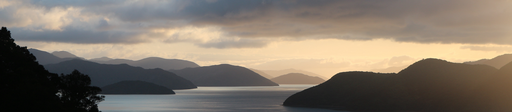

Formation Developpeur Web
O'clock, France
Février - Août 2022
O'clock est une école de Développement Web à distance.
Pendant 6 mois, on y apprend
les langages HTML, CSS, JS Vanilla, PHP, MySQL.
Le 4ème mois est dédié à une spécialisation: React.
Master en Gestion de Projets Culturelles, Sociaux et de Développements
IHECS, Bruxelles
2015 - 2017
Autrement appellé ASCEP (Animation socio-culturelle et éducation permanente).
Pendant deux ans, nous travaillons sur la création et la mise en place de projets avec un lien social.
J'y ai par ailleurs développé un mémoire médiatique sous forme de documentaire à propos de la sensibilisation au tourisme Rural à Madagascar.
License en Communication et Médias.
IHECS, Bruxelles
2012 - 2015
L'Ihecs est une Haute Ecole de Communication et de Journalisme spécialisé dans l'utilisation des médias comme transmetteur de messages. À partir de la seconde année, nous créons des projets cross-médiatiques à travers des médias tels que le graphisme, la photographie, la vidéo, la radio et le développement web.
Agent d'accueil référente au Cairn de Garvinis
Golfe du Morbihan, Bretagne
2020 - 2021
Cairn de Gavrinis est un site néolithique unique au monde comportant de nombreuses gravures d'origine.
- Gestion des commandes pour une boutique spécialisée en archéologie, visite du territoire et artisannat.
- Gestion de l'accueil et des besoins du public.
- Collaborer avec différents acteurs du terrain du Golfe du Morbihan (Office du Tourisme, Compagnie de bateau le "Passeurs des iles", le département du Morbihan).
- Travail de médiation culturelle.
lettre de recommandation
Voyage en Nouvelle Zélande & Australie
2018 - 2019

Assistante de production chez Luc Petit Création
IHECS, Bruxelles
2017
Luc Petit création est une entreprise de création de spectacle vivants et acrobatiques bruxelloise.
- Médiatrice entre direction artistique et équipe de production
- Mise en forme du storyboard
- Elaboration et négociation des contrats de collaborateurs techniques et artistiques.
- Location et gestion du matériel technique